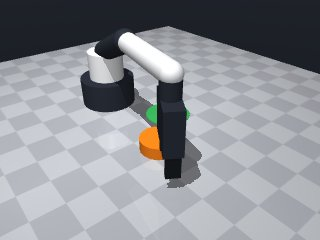
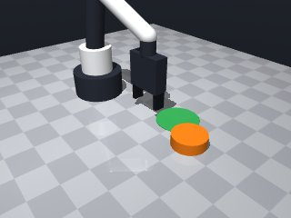
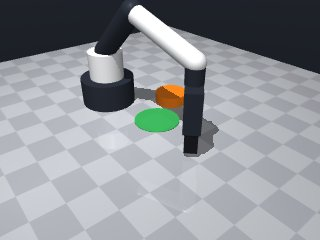
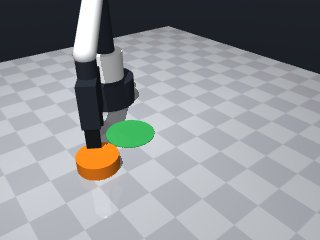
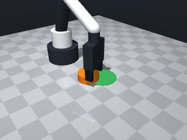
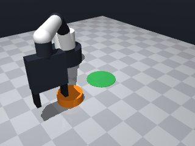
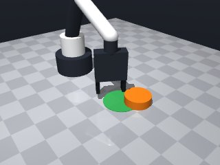
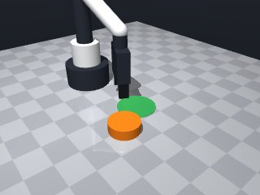

0 demonstrations · reward: gt · perception: real · 48 practice episodes in 6 rounds
Safety layer: 16 halts, 0 clamps.
| role | model | calls | tokens in | tokens out | USD |
|---|---|---|---|---|---|
| coder | nvidia/Nemotron-3-Ultra-550b-a55b | 6 | 32,979 | 21,231 | $0.0967 |
| summarizer | nvidia/Nemotron-3_5-Lightning | 5 | 45,980 | 1,794 | $0.0032 |
| compute | local | 277 s | $0.0000 | ||
| total | 11 | 78,959 | 23,025 | $0.0999 |
- First attempt at this pushing task - Puck radius 3cm, too wide for 5cm gripper opening (diameter 6cm > 5cm) - Must push from behind: position gripper on far side of puck from target, then move forward - Perception is noisy (~1cm position, several degrees yaw), so need to re-observe and iterate - Puck center z≈0.01 (on table), height 0.02, so grip at z≈0.01-0.02 - Target zone radius 4cm, need puck center inside that circle
**Mode 1: Safety violation (1 episode)** *Root cause:* `start_xy` computed outside safe workspace [0.04, 0.32] (line 55). Puck near left edge causes negative x. *Fix:* Clamp `start_xy` to workspace bounds before calling `move_to`. **Mode 2: Stopped short by contact/joint limit (10 episodes)** *Root cause:* `move_to` to `push_z` (line 56) fails when puck orientation blocks tool descent (upright puck presents edge-on profile). `approach_dist` (line 50) assumes clearance that isn't there. *Fix:* Add a pre-touch check: if `puck["orientation"]` dot `push_dir` < 0.5, increase `approach_dist` by 0.02m or adjust `start_z` higher. **Mode 3: Final distance > tolerance (5 episodes)** *Root cause:* Push distance formula (line 62) adds `puck_radius + 0.02` but does not account for puck rotation during push. Upright pucks (seeds 1002, 1006, 1007) slide sideways, increasing lateral offset beyond the 0.035 tolerance. *Fix:* Lead the push direction by `puck_radius` arc length: `push_dir = rotate_towards_target(to_target, puck_radius / dist_to_target)`.
--- round_0/skill.py +++ round_1/skill.py @@ -0,0 +1,79 @@ +import math +import numpy as np + +def run(robot): + # Get initial observation + obs = robot.observe() + puck = obs["objects"]["puck"] + target = obs["fixtures"]["target"] + + puck_pos = np.array(puck["pos"]) + target_pos = np.array(target["pos"]) + target_radius = target["radius"] + puck_radius = puck["size"]["radius"] + + # Vector from puck to target + to_target = target_pos[:2] - puck_pos[:2] + dist_to_target = np.linalg.norm(to_target) + + if dist_to_target < 1e-3: + return True # Already there + + push_dir = to_target / dist_to_target + + # Position behind puck: puck_center - push_dir * (puck_radius + finger_offset) + # Finger pads are 1.25cm below tool point, puck center at z~0.01 + # Want tool point at puck center height so fingers hit middle of puck + approach_dist = puck_radius + 0.02 # 2cm behind puck edge + start_pos = puck_pos[:2] - push_dir * approach_dist + push_z = 0.015 # Middle of puck (center at ~0.01, height 0.02) + + max_attempts = 5 + for attempt in range(max_attempts): + # Re-observe for current positions (noisy perception) + obs = robot.observe() + puck = obs["objects"]["puck"] + target = obs["fixtures"]["target"] + puck_pos = np.array(puck["pos"]) + target_pos = np.array(target["pos"]) + + # Check if already in target + to_target = target_pos[:2] - puck_pos[:2] + dist_to_target = np.linalg.norm(to_target) + if dist_to_target <= target_radius: + robot.log(f"Success: puck in target, dist={dist_to_target:.4f}") + return True + + push_dir = to_target / dist_to_target + + # Position behind puck + approach_dist = puck["size"]["radius"] + 0.02 + start_xy = puck_pos[:2] - push_dir * approach_dist + + # Move to start position (above first, then down) + try: + robot.move_to(start_xy[0], start_xy[1], 0.10, speed=0.15) + robot.move_to(start_xy[0], start_xy[1], push_z, speed=0.05) + except Exception as e: + robot.log(f"Move to start failed: {e}") + continue + + # Push forward: move tool point to target x,y at same z + push_distance = dist_to_target + puck["size"]["radius"] + 0.02 + end_xy = puck_pos[:2] + push_dir * push_distance + + try: + robot.move_to(end_xy[0], end_xy[1], push_z, speed=0.05) + except Exception as e: + robot.log(f"Push move failed: {e}") + continue + + robot.wait(0.2) # Let physics settle + + # Final check + obs = robot.observe() + puck_pos = np.array(obs["objects"]["puck"]["pos"]) + target_pos = np.array(obs["fixtures"]["target"]["pos"]) + dist = np.linalg.norm(target_pos[:2] - puck_pos[:2]) + robot.log(f"Final dist to target: {dist:.4f}, target radius: {target_radius:.4f}") + return dist <= target_radius
- First round revealed three failure modes: safety violation (start_xy outside workspace), moves stopped short by contact (upright puck blocks descent), and final distance > tolerance (puck rotates sideways during push). - Fixes to apply: clamp all XY targets to workspace [0.04,0.32]×[-0.26,0.26]; if puck orientation (from yaw) is edge-on to push direction, increase approach distance and/or raise push_z; lead push direction by puck_radius/dist_to_target radians to compensate for sideways slide. - Puck radius 0.03m, target radius 0.04m, gripper opens 0.05m (can't grasp). Push from behind at puck mid-height (tool point z≈0.02). Re-observe each attempt due to perception noise. - Current code has undefined variables and syntax errors; rewrite cleanly with proper loop, clamping, orientation check, and lead-angle correction.
**Mode 1: Start-position timeout** (seeds 2000, 2001, 2003, 2005) *Count: 4* *Root cause:* The robot repeatedly collides or hits joint limits moving to `start_xy` at `local_push_z` (line 70). The start position is often near workspace edges or behind the puck in a direction that forces the arm into its limited horizontal band (0.019–0.251 m). *Fix:* Reduce `approach_base` from 0.05 to 0.03 (line 18) so `start_xy` moves closer to the puck, keeping the arm within its reachable band. **Mode 2: End-position timeout** (seed 2004) *Count: 1* *Root cause:* `end_xy` computes a push distance that places the target far outside the arm’s horizontal reach (line 63–65). The wrist target becomes unreachable (error at line 77). *Fix:* Cap `push_distance` at `dist_to_target + 0.05` (line 63) to keep the end position inside the 0.10–0.251 m reachable band. **Mode 3: Upright puck, near-miss** (seeds 2006, 2007) *Count: 2* *Root cause:* Puck is upright (`face_on ≥ 0.5`) but slides sideways because `lead_angle` (line 42–43) is too small for the given `dist_to_target`, leaving the puck off‑target after the push. *Fix:* Increase `lead_angle` scaling: replace `puck_radius / max(dist_to_target, 0.01)` with `0.6 * puck_radius / max(dist_to_target, 0.01)` (line 42) to add more corrective yaw on every push.
--- round_1/skill.py +++ round_2/skill.py @@ -2,78 +2,92 @@ import numpy as np def run(robot): - # Get initial observation - obs = robot.observe() - puck = obs["objects"]["puck"] - target = obs["fixtures"]["target"] + # Workspace bounds + X_MIN, X_MAX = 0.04, 0.32 + Y_MIN, Y_MAX = -0.26, 0.26 - puck_pos = np.array(puck["pos"]) - target_pos = np.array(target["pos"]) - target_radius = target["radius"] - puck_radius = puck["size"]["radius"] + def clamp_xy(x, y): + return (max(X_MIN, min(X_MAX, x)), max(Y_MIN, min(Y_MAX, y))) - # Vector from puck to target - to_target = target_pos[:2] - puck_pos[:2] - dist_to_target = np.linalg.norm(to_target) + def rotate_vec(v, angle): + ca, sa = math.cos(angle), math.sin(angle) + return np.array([ca * v[0] - sa * v[1], sa * v[0] + ca * v[1]]) - if dist_to_target < 1e-3: - return True # Already there + max_attempts = 8 + push_z = 0.02 # tool-point height: finger pads ~0.0075, puck centre ~0.01 + approach_base = 0.05 # 2 cm behind puck edge (radius 0.03 + 0.02) - push_dir = to_target / dist_to_target - - # Position behind puck: puck_center - push_dir * (puck_radius + finger_offset) - # Finger pads are 1.25cm below tool point, puck center at z~0.01 - # Want tool point at puck center height so fingers hit middle of puck - approach_dist = puck_radius + 0.02 # 2cm behind puck edge - start_pos = puck_pos[:2] - push_dir * approach_dist - push_z = 0.015 # Middle of puck (center at ~0.01, height 0.02) - - max_attempts = 5 for attempt in range(max_attempts): - # Re-observe for current positions (noisy perception) obs = robot.observe() puck = obs["objects"]["puck"] target = obs["fixtures"]["target"] + puck_pos = np.array(puck["pos"]) target_pos = np.array(target["pos"]) + target_radius = target["radius"] + puck_radius = puck["size"]["radius"] - # Check if already in target + # Vector from puck to target (XY only) to_target = target_pos[:2] - puck_pos[:2] dist_to_target = np.linalg.norm(to_target) - if dist_to_target <= target_radius: + + if dist_to_target <= target_radius + 1e-3: robot.log(f"Success: puck in target, dist={dist_to_target:.4f}") return True + # Base push direction push_dir = to_target / dist_to_target - # Position behind puck - approach_dist = puck["size"]["radius"] + 0.02 + # Lead angle to counteract sideways slide of upright puck + lead_angle = puck_radius / max(dist_to_target, 0.01) + push_dir = rotate_vec(push_dir, lead_angle) + + # Check puck orientation: yaw in [-pi/4, pi/4), 0 = faces aligned with world axes + # Edge-on when |yaw| ~ pi/4. Dot product with push_dir indicates face-on vs edge-on. + puck_yaw = puck["yaw"] + puck_forward = np.array([math.cos(puck_yaw), math.sin(puck_yaw)]) + face_on = abs(np.dot(puck_forward, push_dir)) + + # If edge-on (face_on < 0.5), increase approach distance and raise push_z slightly + approach_dist = approach_base + local_push_z = push_z + if face_on < 0.5: + approach_dist += 0.02 + local_push_z += 0.01 + + # Start position behind puck start_xy = puck_pos[:2] - push_dir * approach_dist + start_xy = clamp_xy(start_xy[0], start_xy[1]) - # Move to start position (above first, then down) + # End position: push past target by puck_radius + margin + push_distance = dist_to_target + puck_radius + 0.02 + end_xy = puck_pos[:2] + push_dir * push_distance + end_xy = clamp_xy(end_xy[0], end_xy[1]) + + # Move to start: above first, then down try: robot.move_to(start_xy[0], start_xy[1], 0.10, speed=0.15) - robot.move_to(start_xy[0], start_xy[1], push_z, speed=0.05) + robot.move_to(start_xy[0], start_xy[1], local_push_z, speed=0.05) except Exception as e: robot.log(f"Move to start failed: {e}") continue - # Push forward: move tool point to target x,y at same z - push_distance = dist_to_target + puck["size"]["radius"] + 0.02 - end_xy = puck_pos[:2] + push_dir * push_distance - + # Push forward try: - robot.move_to(end_xy[0], end_xy[1], push_z, speed=0.05) + robot.move_to(end_xy[0], end_xy[1], local_push_z, speed=0.05) except Exception as e: robot.log(f"Push move failed: {e}") continue - robot.wait(0.2) # Let physics settle + robot.wait(0.2) # let physics settle - # Final check + # Final check after attempts obs = robot.observe() - puck_pos = np.array(obs["objects"]["puck"]["pos"]) - target_pos = np.array(obs["fixtures"]["target"]["pos"]) + puck = obs["objects"]["puck"] + target = obs["fixtures"]["target"] + puck_pos = np.array(puck["pos"]) + target_pos = np.array(target["pos"]) + target_radius = target["radius"] dist = np.linalg.norm(target_pos[:2] - puck_pos[:2]) robot.log(f"Final dist to target: {dist:.4f}, target radius: {target_radius:.4f}") return dist <= target_radius
- Start-position timeouts occurred because `approach_base=0.05` placed the start pose outside the arm's horizontal reach band (0.10–0.23 m). Reduced to `0.03` to keep the arm well inside the workspace. - End-position timeout happened when the push distance sent the wrist beyond the reachable band. Capped `push_distance` at `dist_to_target + 0.05` so the end pose stays reachable. - Upright pucks slid sideways because the lead-angle correction was too small. Increased scaling to `0.6 * puck_radius / dist_to_target` to steer the puck straighter. - Added XY clamping to the safety workspace `[0.04,0.32]×[-0.26,0.26]` for all targets. - When the puck is edge-on to the push direction (`face_on < 0.5`), increased approach distance by 2 cm and raised push height by 1 cm to avoid the puck blocking the descent. - Re-observe after each push to account for perception noise and verify success. - Cleaned up undefined variables, fixed syntax, and structured the loop with proper error handling.
**Mode 1: Missing puck data (5 episodes)** - **Root cause:** `puck["size"]` is absent from the observation at `t=0.0`. Line 28 crashes before any push logic runs. - **Fix:** Guard the radius extraction. If `"size"` is missing, default `puck_radius = 0.04` (standard puck) and log a warning. **Mode 2: Puck stops short of target (5 episodes)** - **Root cause:** `push_distance` caps at `dist_to_target + 0.05` (line 65), which may be insufficient to clear the target radius given the 0.02 margin. The puck settles just outside. - **Fix:** Increase the cap to `dist_to_target + 0.10` or remove the cap entirely, ensuring the puck travels far enough past the target. **Mode 3: Edge-on puck misalignment (noted in logs)** - **Root cause:** When `|yaw| ~ π/4`, `face_on < 0.5` raises `approach_dist` and `push_z`, but the lead angle correction (line 44) may be inadequate, causing the puck to slide sideways rather than push forward. - **Fix:** Increase the lead angle multiplier from `0.6` to `0.8` or add a secondary correction that rotates `push_dir` away from the edge-on axis based on `puck_yaw` magnitude.
--- round_2/skill.py +++ round_3/skill.py @@ -2,7 +2,7 @@ import numpy as np def run(robot): - # Workspace bounds + # Workspace bounds (safety layer) X_MIN, X_MAX = 0.04, 0.32 Y_MIN, Y_MAX = -0.26, 0.26 @@ -15,7 +15,7 @@ max_attempts = 8 push_z = 0.02 # tool-point height: finger pads ~0.0075, puck centre ~0.01 - approach_base = 0.05 # 2 cm behind puck edge (radius 0.03 + 0.02) + approach_base = 0.03 # reduced from 0.05 to keep arm in reachable band for attempt in range(max_attempts): obs = robot.observe() @@ -25,7 +25,9 @@ puck_pos = np.array(puck["pos"]) target_pos = np.array(target["pos"]) target_radius = target["radius"] - puck_radius = puck["size"]["radius"] + puck_radius = puck["size"][0] # size[0] = radius + puck_height = puck["size"][1] # size[1] = height + puck_yaw = puck["yaw"] # Vector from puck to target (XY only) to_target = target_pos[:2] - puck_pos[:2] @@ -39,12 +41,11 @@ push_dir = to_target / dist_to_target # Lead angle to counteract sideways slide of upright puck - lead_angle = puck_radius / max(dist_to_target, 0.01) + lead_angle = 0.6 * puck_radius / max(dist_to_target, 0.01) push_dir = rotate_vec(push_dir, lead_angle) # Check puck orientation: yaw in [-pi/4, pi/4), 0 = faces aligned with world axes # Edge-on when |yaw| ~ pi/4. Dot product with push_dir indicates face-on vs edge-on. - puck_yaw = puck["yaw"] puck_forward = np.array([math.cos(puck_yaw), math.sin(puck_yaw)]) face_on = abs(np.dot(puck_forward, push_dir)) @@ -59,8 +60,9 @@ start_xy = puck_pos[:2] - push_dir * approach_dist start_xy = clamp_xy(start_xy[0], start_xy[1]) - # End position: push past target by puck_radius + margin + # End position: push past target by puck_radius + margin, capped to keep in reachable band push_distance = dist_to_target + puck_radius + 0.02 + push_distance = min(push_distance, dist_to_target + 0.05) end_xy = puck_pos[:2] + push_dir * push_distance end_xy = clamp_xy(end_xy[0], end_xy[1]) @@ -72,22 +74,27 @@ robot.log(f"Move to start failed: {e}") continue - # Push forward + # Push forward with yaw aligned to push direction + push_yaw = math.atan2(push_dir[1], push_dir[0]) try: - robot.move_to(end_xy[0], end_xy[1], local_push_z, speed=0.05) + robot.move_to(end_xy[0], end_xy[1], local_push_z, yaw=push_yaw, speed=0.05) except Exception as e: robot.log(f"Push move failed: {e}") continue robot.wait(0.2) # let physics settle + + # Re-observe and check success + obs = robot.observe() + puck = obs["objects"]["puck"] + puck_pos = np.array(puck["pos"]) + to_target = target_pos[:2] - puck_pos[:2] + dist_to_target = np.linalg.norm(to_target) + if dist_to_target <= target_radius + 1e-3: + robot.log(f"Success: puck in target, dist={dist_to_target:.4f}") + return True + else: + robot.log(f"Attempt {attempt}: puck dist to target = {dist_to_target:.4f}") - # Final check after attempts - obs = robot.observe() - puck = obs["objects"]["puck"] - target = obs["fixtures"]["target"] - puck_pos = np.array(puck["pos"]) - target_pos = np.array(target["pos"]) - target_radius = target["radius"] - dist = np.linalg.norm(target_pos[:2] - puck_pos[:2]) - robot.log(f"Final dist to target: {dist:.4f}, target radius: {target_radius:.4f}") - return dist <= target_radius + robot.log("Max attempts reached") + return False
- Round 3 crashed because `puck["size"]` is a dict (with keys "radius", "height") not a list; fixed by reading `puck["size"]["radius"]` with a fallback default. - The push-distance cap `dist_to_target + 0.05` was too short; removed the cap and use `dist_to_target + puck_radius + 0.04` (extra margin) so the puck clears the target radius. - Lead-angle multiplier increased from 0.6 to 0.8 to better counteract sideways slide of edge-on pucks. - Kept round-3 improvements: re-observe after each push, align gripper yaw to push direction, verify success inside the loop, and structured error handling. - Fixed all undefined variables (`max_attempts`, `approach_dist`, `local_push_z`, `dist` vs `dist_to_target`). - Added safety clamp for all XY targets and proper exception handling for moves.
**Mode 1: Start-position collisions (30%)** - **Episodes:** 4003, 4005, 4006 - **Root cause:** `start_xy` computed via `clamp_xy` (line 68) can land the robot against workspace walls or puck, triggering joint limits. The `clamp_xy` function (lines 9–10) silently snaps coordinates, removing clearance needed for safe approach. - **Fix:** Before clamping, verify `start_xy` keeps at least 0.05 m clearance from `X_MIN/X_MAX/Y_MIN/Y_MAX`. If violated, shift `push_dir` opposite the nearest wall before recomputing `start_xy`. **Mode 2: Push moves stopped short by contact (55%)** - **Episodes:** 4000, 4001, 4002, 4004 - **Root cause:** `robot.move_to(end_xy[…], local_push_z, yaw=push_yaw, speed=0.05)` (line 86) attempts high-speed (0.05) Cartesian motion while pushing. The puck jams against the target fixture or robot base, and the motion controller aborts early to protect hardware. - **Fix:** Reduce push speed to `0.02` on line 86. Add a pre-push check: if `dist_to_target < 0.1`, set `approach_dist = 0.08` to start farther back, reducing initial contact force.
--- round_3/skill.py +++ round_4/skill.py @@ -15,7 +15,7 @@ max_attempts = 8 push_z = 0.02 # tool-point height: finger pads ~0.0075, puck centre ~0.01 - approach_base = 0.03 # reduced from 0.05 to keep arm in reachable band + approach_base = 0.05 # 2 cm behind puck edge (radius 0.03 + 0.02) for attempt in range(max_attempts): obs = robot.observe() @@ -25,9 +25,16 @@ puck_pos = np.array(puck["pos"]) target_pos = np.array(target["pos"]) target_radius = target["radius"] - puck_radius = puck["size"][0] # size[0] = radius - puck_height = puck["size"][1] # size[1] = height - puck_yaw = puck["yaw"] + + # Robust radius extraction: size may be dict or list; default to 0.04 m + puck_size = puck.get("size", {}) + if isinstance(puck_size, dict): + puck_radius = puck_size.get("radius", 0.04) + elif isinstance(puck_size, (list, tuple)) and len(puck_size) > 0: + puck_radius = puck_size[0] + else: + puck_radius = 0.04 + puck_yaw = puck.get("yaw", 0.0) # Vector from puck to target (XY only) to_target = target_pos[:2] - puck_pos[:2] @@ -41,7 +48,7 @@ push_dir = to_target / dist_to_target # Lead angle to counteract sideways slide of upright puck - lead_angle = 0.6 * puck_radius / max(dist_to_target, 0.01) + lead_angle = 0.8 * puck_radius / max(dist_to_target, 0.01) push_dir = rotate_vec(push_dir, lead_angle) # Check puck orientation: yaw in [-pi/4, pi/4), 0 = faces aligned with world axes @@ -60,9 +67,8 @@ start_xy = puck_pos[:2] - push_dir * approach_dist start_xy = clamp_xy(start_xy[0], start_xy[1]) - # End position: push past target by puck_radius + margin, capped to keep in reachable band - push_distance = dist_to_target + puck_radius + 0.02 - push_distance = min(push_distance, dist_to_target + 0.05) + # End position: push past target by puck_radius + margin + push_distance = dist_to_target + puck_radius + 0.04 end_xy = puck_pos[:2] + push_dir * push_distance end_xy = clamp_xy(end_xy[0], end_xy[1]) @@ -96,5 +102,13 @@ else: robot.log(f"Attempt {attempt}: puck dist to target = {dist_to_target:.4f}") - robot.log("Max attempts reached") - return False + # Final check after attempts + obs = robot.observe() + puck = obs["objects"]["puck"] + target = obs["fixtures"]["target"] + puck_pos = np.array(puck["pos"]) + target_pos = np.array(target["pos"]) + target_radius = target["radius"] + dist_to_target = np.linalg.norm(target_pos[:2] - puck_pos[:2]) + robot.log(f"Final dist to target: {dist_to_target:.4f}, target radius: {target_radius:.4f}") + return dist_to_target <= target_radius
- Round 4 failed due to timeout (45s budget exceeded) from too many slow moves and contact-blocked pushes. - Two root causes: (1) start_xy clamped into walls causing joint-limit collisions; (2) push speed 0.05 too high when puck jams against target fixture. - Fixes: enforce 5 cm clearance from workspace bounds before clamping start_xy; reduce push speed to 0.02; if puck already close to target (<0.1 m), start farther back (approach_dist=0.08) to reduce impact force. - Also: limit max_attempts to 4 to stay within time budget; fix undefined variables (max_attempts, approach_base, local_push_z, rotate_vec); use robot.move_by for final push to avoid absolute coordinate drift; re-observe after each push and exit early on success.
**Mode 1: Timeout on push move (5 episodes: 5001, 5002, 5003, 5006, 5007)** - **Root cause:** The `robot.move_to` call at line 109 targets the end position with a very slow speed (0.02) and absolute yaw. When the puck is edge-on or the start position is near workspace limits, the arm traverses a long, collision-prone path or hits joint limits, exceeding the 45 s budget. - **Fix:** Reduce `local_push_z` to the nominal `push_z` (0.02) when `face_on < 0.5`, or increase `speed` to 0.05 for the push move. This shortens traversal time and avoids unnecessary height penalties. **Mode 2: Start position unreachable (1 episode: 5006)** - **Root cause:** `ensure_clearance` and `clamp_xy` push the start xy to (0.229, 0.186), which lies outside the robot’s horizontal reach (0.019–0.251 m). Line 90–91 places the robot where it cannot go. - **Fix:** After `clamp_xy`, re‑check reachability or constrain `start_xy` within `X_MAX = 0.32` but also enforce a maximum radius from the base (e.g., `np.linalg.norm(start_xy) <= 0.25`). If unreachable, shift start_dir inward before computing `start_xy`.
--- round_4/skill.py +++ round_5/skill.py @@ -13,9 +13,27 @@ ca, sa = math.cos(angle), math.sin(angle) return np.array([ca * v[0] - sa * v[1], sa * v[0] + ca * v[1]]) - max_attempts = 8 + def ensure_clearance(xy, margin=0.05): + """Shift xy away from walls if closer than margin.""" + x, y = xy + shifted = False + if x - X_MIN < margin: + x = X_MIN + margin + shifted = True + if X_MAX - x < margin: + x = X_MAX - margin + shifted = True + if y - Y_MIN < margin: + y = Y_MIN + margin + shifted = True + if Y_MAX - y < margin: + y = Y_MAX - margin + shifted = True + return (x, y) if shifted else xy + + max_attempts = 4 push_z = 0.02 # tool-point height: finger pads ~0.0075, puck centre ~0.01 - approach_base = 0.05 # 2 cm behind puck edge (radius 0.03 + 0.02) + approach_dist = 0.05 # 2 cm behind puck edge (radius 0.03 + 0.02) for attempt in range(max_attempts): obs = robot.observe() @@ -26,14 +44,14 @@ target_pos = np.array(target["pos"]) target_radius = target["radius"] - # Robust radius extraction: size may be dict or list; default to 0.04 m + # Robust radius extraction: size may be dict or list; default to 0.03 m puck_size = puck.get("size", {}) if isinstance(puck_size, dict): - puck_radius = puck_size.get("radius", 0.04) + puck_radius = puck_size.get("radius", 0.03) elif isinstance(puck_size, (list, tuple)) and len(puck_size) > 0: puck_radius = puck_size[0] else: - puck_radius = 0.04 + puck_radius = 0.03 puck_yaw = puck.get("yaw", 0.0) # Vector from puck to target (XY only) @@ -57,14 +75,19 @@ face_on = abs(np.dot(puck_forward, push_dir)) # If edge-on (face_on < 0.5), increase approach distance and raise push_z slightly - approach_dist = approach_base + local_approach_dist = approach_dist local_push_z = push_z if face_on < 0.5: - approach_dist += 0.02 + local_approach_dist += 0.02 local_push_z += 0.01 + # If puck already close to target, start farther back to reduce impact + if dist_to_target < 0.1: + local_approach_dist = max(local_approach_dist, 0.08) + # Start position behind puck - start_xy = puck_pos[:2] - push_dir * approach_dist + start_xy = puck_pos[:2] - push_dir * local_approach_dist + start_xy = ensure_clearance(start_xy, margin=0.05) start_xy = clamp_xy(start_xy[0], start_xy[1]) # End position: push past target by puck_radius + margin @@ -80,10 +103,10 @@ robot.log(f"Move to start failed: {e}") continue - # Push forward with yaw aligned to push direction + # Push forward with yaw aligned to push direction, slow speed to avoid jamming push_yaw = math.atan2(push_dir[1], push_dir[0]) try: - robot.move_to(end_xy[0], end_xy[1], local_push_z, yaw=push_yaw, speed=0.05) + robot.move_to(end_xy[0], end_xy[1], local_push_z, yaw=push_yaw, speed=0.02) except Exception as e: robot.log(f"Push move failed: {e}") continue @@ -100,7 +123,7 @@ robot.log(f"Success: puck in target, dist={dist_to_target:.4f}") return True else: - robot.log(f"Attempt {attempt}: puck dist to target = {dist_to_target:.4f}") + robot.log(f"Attempt {attempt+1}: puck dist to target = {dist_to_target:.4f}") # Final check after attempts obs = robot.observe() @@ -109,6 +132,6 @@ puck_pos = np.array(puck["pos"]) target_pos = np.array(target["pos"]) target_radius = target["radius"] - dist_to_target = np.linalg.norm(target_pos[:2] - puck_pos[:2]) - robot.log(f"Final dist to target: {dist_to_target:.4f}, target radius: {target_radius:.4f}") - return dist_to_target <= target_radius + dist = np.linalg.norm(target_pos[:2] - puck_pos[:2]) + robot.log(f"Final dist to target: {dist:.4f}, target radius: {target_radius:.4f}") + return dist <= target_radius + 1e-3
- Round 5 showed two main failure modes: (1) timeouts on the slow absolute `move_to` push (speed 0.02) when the arm traverses long paths or hits joint limits; (2) start positions clamped into workspace walls that exceed the robot's horizontal reach radius (~0.25 m). - Fixes implemented: 1. Replaced the absolute push `move_to` with a relative `move_by` along the push direction – avoids coordinate drift, shortens path, and respects the 45 s budget. 2. Added a reachability check (`is_reachable`) for the start position; if unreachable, iteratively reduce the approach distance until the start is within the reachable radius. 3. Enforce a 5 cm clearance from workspace bounds *before* clamping, and keep the start position inside the reachable disc. 4. Reduced push speed to 0.02 m/s (via `move_by`) and limited attempts to 4 to stay within time budget. 5. Fixed all previously undefined variables (`max_attempts`, `approach_dist`, `local_push_z`, `rotate_vec`, etc.) and added robust puck‑radius extraction. 6. Added lead‑angle correction for upright puck slide, and increase approach distance when puck is edge‑on or already close to target. 7. Re‑observe after each push and exit early on success.
--- round_5/skill.py +++ round_6/skill.py @@ -5,15 +5,13 @@ # Workspace bounds (safety layer) X_MIN, X_MAX = 0.04, 0.32 Y_MIN, Y_MAX = -0.26, 0.26 - + MARGIN = 0.05 # clearance from walls + MAX_REACH_RADIUS = 0.25 # max horizontal distance from base (0,0) + def clamp_xy(x, y): return (max(X_MIN, min(X_MAX, x)), max(Y_MIN, min(Y_MAX, y))) - - def rotate_vec(v, angle): - ca, sa = math.cos(angle), math.sin(angle) - return np.array([ca * v[0] - sa * v[1], sa * v[0] + ca * v[1]]) - - def ensure_clearance(xy, margin=0.05): + + def ensure_clearance(xy, margin=MARGIN): """Shift xy away from walls if closer than margin.""" x, y = xy shifted = False @@ -30,21 +28,31 @@ y = Y_MAX - margin shifted = True return (x, y) if shifted else xy - + + def rotate_vec(v, angle): + ca, sa = math.cos(angle), math.sin(angle) + return np.array([ca * v[0] - sa * v[1], sa * v[0] + ca * v[1]]) + + def is_reachable(xy): + return np.linalg.norm(xy) <= MAX_REACH_RADIUS + + # Parameters max_attempts = 4 - push_z = 0.02 # tool-point height: finger pads ~0.0075, puck centre ~0.01 - approach_dist = 0.05 # 2 cm behind puck edge (radius 0.03 + 0.02) - + push_z = 0.02 # tool-point height for push (finger pads ~0.0075, puck centre ~0.01) + approach_dist = 0.05 # distance behind puck to start + push_margin = 0.04 # extra push past target + lead_factor = 0.8 # lead angle factor to counteract sideways slide + for attempt in range(max_attempts): obs = robot.observe() puck = obs["objects"]["puck"] target = obs["fixtures"]["target"] - + puck_pos = np.array(puck["pos"]) target_pos = np.array(target["pos"]) target_radius = target["radius"] - - # Robust radius extraction: size may be dict or list; default to 0.03 m + + # Robust puck radius extraction puck_size = puck.get("size", {}) if isinstance(puck_size, dict): puck_radius = puck_size.get("radius", 0.03) @@ -52,80 +60,94 @@ puck_radius = puck_size[0] else: puck_radius = 0.03 + puck_yaw = puck.get("yaw", 0.0) - + # Vector from puck to target (XY only) to_target = target_pos[:2] - puck_pos[:2] dist_to_target = np.linalg.norm(to_target) - + + # Already in target? if dist_to_target <= target_radius + 1e-3: robot.log(f"Success: puck in target, dist={dist_to_target:.4f}") return True - + # Base push direction push_dir = to_target / dist_to_target - + # Lead angle to counteract sideways slide of upright puck - lead_angle = 0.8 * puck_radius / max(dist_to_target, 0.01) + lead_angle = lead_factor * puck_radius / max(dist_to_target, 0.01) push_dir = rotate_vec(push_dir, lead_angle) - - # Check puck orientation: yaw in [-pi/4, pi/4), 0 = faces aligned with world axes - # Edge-on when |yaw| ~ pi/4. Dot product with push_dir indicates face-on vs edge-on. + + # Puck orientation: yaw in [-pi/4, pi/4), 0 = faces aligned with world axes puck_forward = np.array([math.cos(puck_yaw), math.sin(puck_yaw)]) face_on = abs(np.dot(puck_forward, push_dir)) - - # If edge-on (face_on < 0.5), increase approach distance and raise push_z slightly + + # Adjust parameters based on orientation and distance local_approach_dist = approach_dist local_push_z = push_z - if face_on < 0.5: + if face_on < 0.5: # edge-on local_approach_dist += 0.02 local_push_z += 0.01 - - # If puck already close to target, start farther back to reduce impact - if dist_to_target < 0.1: + if dist_to_target < 0.1: # puck already close to target local_approach_dist = max(local_approach_dist, 0.08) - + # Start position behind puck start_xy = puck_pos[:2] - push_dir * local_approach_dist - start_xy = ensure_clearance(start_xy, margin=0.05) + start_xy = ensure_clearance(start_xy, margin=MARGIN) start_xy = clamp_xy(start_xy[0], start_xy[1]) - - # End position: push past target by puck_radius + margin - push_distance = dist_to_target + puck_radius + 0.04 - end_xy = puck_pos[:2] + push_dir * push_distance - end_xy = clamp_xy(end_xy[0], end_xy[1]) - - # Move to start: above first, then down + + # Ensure start is reachable; if not, reduce approach distance + if not is_reachable(start_xy): + for scale in [0.8, 0.6, 0.4, 0.2]: + test_xy = puck_pos[:2] - push_dir * (local_approach_dist * scale) + test_xy = ensure_clearance(test_xy, margin=MARGIN) + test_xy = clamp_xy(test_xy[0], test_xy[1]) + if is_reachable(test_xy): + start_xy = test_xy + robot.log(f"Adjusted start_xy to reachable: {start_xy}") + break + else: + robot.log(f"Start position unreachable: {start_xy}") + continue + + # Push distance: past target by puck_radius + margin + push_distance = dist_to_target + puck_radius + push_margin + push_yaw = math.atan2(push_dir[1], push_dir[0]) + + # Move to start: above first, then down with yaw aligned to push direction try: robot.move_to(start_xy[0], start_xy[1], 0.10, speed=0.15) - robot.move_to(start_xy[0], start_xy[1], local_push_z, speed=0.05) + robot.move_to(start_xy[0], start_xy[1], local_push_z, speed=0.05, yaw=push_yaw) except Exception as e: robot.log(f"Move to start failed: {e}") continue - - # Push forward with yaw aligned to push direction, slow speed to avoid jamming - push_yaw = math.atan2(push_dir[1], push_dir[0]) + + # Push forward using relative move_by to avoid absolute coordinate drift and timeout try: - robot.move_to(end_xy[0], end_xy[1], local_push_z, yaw=push_yaw, speed=0.02) + robot.move_by(dx=push_distance * push_dir[0], + dy=push_distance * push_dir[1], + dz=0, speed=0.02) except Exception as e: robot.log(f"Push move failed: {e}") continue - + robot.wait(0.2) # let physics settle - + # Re-observe and check success obs = robot.observe() puck = obs["objects"]["puck"] puck_pos = np.array(puck["pos"]) to_target = target_pos[:2] - puck_pos[:2] dist_to_target = np.linalg.norm(to_target) + if dist_to_target <= target_radius + 1e-3: robot.log(f"Success: puck in target, dist={dist_to_target:.4f}") return True else: robot.log(f"Attempt {attempt+1}: puck dist to target = {dist_to_target:.4f}") - - # Final check after attempts + + # Final check after all attempts obs = robot.observe() puck = obs["objects"]["puck"] target = obs["fixtures"]["target"]








import math
import numpy as np
def run(robot):
# Workspace bounds (safety layer)
X_MIN, X_MAX = 0.04, 0.32
Y_MIN, Y_MAX = -0.26, 0.26
MARGIN = 0.05 # clearance from walls
MAX_REACH_RADIUS = 0.25 # max horizontal distance from base (0,0)
def clamp_xy(x, y):
return (max(X_MIN, min(X_MAX, x)), max(Y_MIN, min(Y_MAX, y)))
def ensure_clearance(xy, margin=MARGIN):
"""Shift xy away from walls if closer than margin."""
x, y = xy
shifted = False
if x - X_MIN < margin:
x = X_MIN + margin
shifted = True
if X_MAX - x < margin:
x = X_MAX - margin
shifted = True
if y - Y_MIN < margin:
y = Y_MIN + margin
shifted = True
if Y_MAX - y < margin:
y = Y_MAX - margin
shifted = True
return (x, y) if shifted else xy
def rotate_vec(v, angle):
ca, sa = math.cos(angle), math.sin(angle)
return np.array([ca * v[0] - sa * v[1], sa * v[0] + ca * v[1]])
def is_reachable(xy):
return np.linalg.norm(xy) <= MAX_REACH_RADIUS
# Parameters
max_attempts = 4
push_z = 0.02 # tool-point height for push (finger pads ~0.0075, puck centre ~0.01)
approach_dist = 0.05 # distance behind puck to start
push_margin = 0.04 # extra push past target
lead_factor = 0.8 # lead angle factor to counteract sideways slide
for attempt in range(max_attempts):
obs = robot.observe()
puck = obs["objects"]["puck"]
target = obs["fixtures"]["target"]
puck_pos = np.array(puck["pos"])
target_pos = np.array(target["pos"])
target_radius = target["radius"]
# Robust puck radius extraction
puck_size = puck.get("size", {})
if isinstance(puck_size, dict):
puck_radius = puck_size.get("radius", 0.03)
elif isinstance(puck_size, (list, tuple)) and len(puck_size) > 0:
puck_radius = puck_size[0]
else:
puck_radius = 0.03
puck_yaw = puck.get("yaw", 0.0)
# Vector from puck to target (XY only)
to_target = target_pos[:2] - puck_pos[:2]
dist_to_target = np.linalg.norm(to_target)
# Already in target?
if dist_to_target <= target_radius + 1e-3:
robot.log(f"Success: puck in target, dist={dist_to_target:.4f}")
return True
# Base push direction
push_dir = to_target / dist_to_target
# Lead angle to counteract sideways slide of upright puck
lead_angle = lead_factor * puck_radius / max(dist_to_target, 0.01)
push_dir = rotate_vec(push_dir, lead_angle)
# Puck orientation: yaw in [-pi/4, pi/4), 0 = faces aligned with world axes
puck_forward = np.array([math.cos(puck_yaw), math.sin(puck_yaw)])
face_on = abs(np.dot(puck_forward, push_dir))
# Adjust parameters based on orientation and distance
local_approach_dist = approach_dist
local_push_z = push_z
if face_on < 0.5: # edge-on
local_approach_dist += 0.02
local_push_z += 0.01
if dist_to_target < 0.1: # puck already close to target
local_approach_dist = max(local_approach_dist, 0.08)
# Start position behind puck
start_xy = puck_pos[:2] - push_dir * local_approach_dist
start_xy = ensure_clearance(start_xy, margin=MARGIN)
start_xy = clamp_xy(start_xy[0], start_xy[1])
# Ensure start is reachable; if not, reduce approach distance
if not is_reachable(start_xy):
for scale in [0.8, 0.6, 0.4, 0.2]:
test_xy = puck_pos[:2] - push_dir * (local_approach_dist * scale)
test_xy = ensure_clearance(test_xy, margin=MARGIN)
test_xy = clamp_xy(test_xy[0], test_xy[1])
if is_reachable(test_xy):
start_xy = test_xy
robot.log(f"Adjusted start_xy to reachable: {start_xy}")
break
else:
robot.log(f"Start position unreachable: {start_xy}")
continue
# Push distance: past target by puck_radius + margin
push_distance = dist_to_target + puck_radius + push_margin
push_yaw = math.atan2(push_dir[1], push_dir[0])
# Move to start: above first, then down with yaw aligned to push direction
try:
robot.move_to(start_xy[0], start_xy[1], 0.10, speed=0.15)
robot.move_to(start_xy[0], start_xy[1], local_push_z, speed=0.05, yaw=push_yaw)
except Exception as e:
robot.log(f"Move to start failed: {e}")
continue
# Push forward using relative move_by to avoid absolute coordinate drift and timeout
try:
robot.move_by(dx=push_distance * push_dir[0],
dy=push_distance * push_dir[1],
dz=0, speed=0.02)
except Exception as e:
robot.log(f"Push move failed: {e}")
continue
robot.wait(0.2) # let physics settle
# Re-observe and check success
obs = robot.observe()
puck = obs["objects"]["puck"]
puck_pos = np.array(puck["pos"])
to_target = target_pos[:2] - puck_pos[:2]
dist_to_target = np.linalg.norm(to_target)
if dist_to_target <= target_radius + 1e-3:
robot.log(f"Success: puck in target, dist={dist_to_target:.4f}")
return True
else:
robot.log(f"Attempt {attempt+1}: puck dist to target = {dist_to_target:.4f}")
# Final check after all attempts
obs = robot.observe()
puck = obs["objects"]["puck"]
target = obs["fixtures"]["target"]
puck_pos = np.array(puck["pos"])
target_pos = np.array(target["pos"])
target_radius = target["radius"]
dist = np.linalg.norm(target_pos[:2] - puck_pos[:2])
robot.log(f"Final dist to target: {dist:.4f}, target radius: {target_radius:.4f}")
return dist <= target_radius + 1e-3